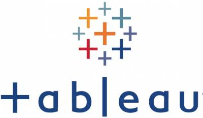

This project analyzes e-commerce sales data to derive meaningful insights and visualize sales trends.
The analysis includes data collection, database management, data cleaning, exploratory data analysis, and interactive visualizations using Tableau.
This project uses an LSTM model to predict stock prices by analyzing historical data,
providing accurate forecasts for financial analysis and decision-making.

The Airbnb Trends Dashboard project uses the 2016 dataset to visualize pricing,
room types, and customer preferences through interactive Tableau charts, offering insights
into trends and variations.

This project automates product detail extraction from Amazon using Python and web scraping,
enabling price comparison, market trend analysis, and dataset creation for further research.
This project uses deep learning-based image classification models to accurately identify
and categorize different species of flowers based on their visual characteristics.
This project involves cleaning and visualizing bike sales data using Excel.
The objective was to create a clean dataset, perform data analysis, and design an insightful dashboard for bike sales performance.